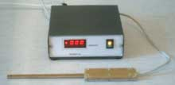
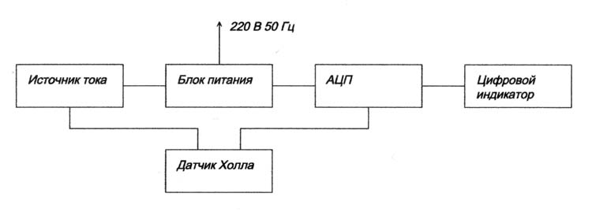
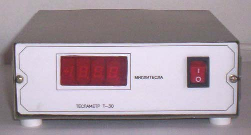
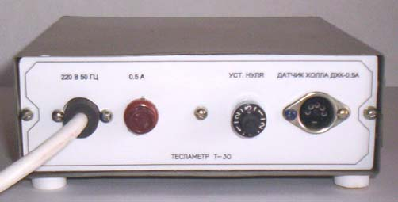

Цифровой тесламетр с
датчиком Холла ДХК-0.5А
для измерения индукции магнитного поля

Назначение
Цифровой тесламетр предназначен для оперативного измерения и
контроля величины индукции постоянного магнитного поля с помощью датчика Холла
типа ДХК-0.5А [1]. Он может использоваться при контроле постоянных магнитов и
магнитных систем, при конструировании и ремонте магнитных систем и устройств с
постоянными магнитами, а также для построения различных измерительных установок
и комплексов [2]. Разработаны две модификации прибора - с сетевым и автономным
питанием (аккумуляторная батарея). Прибор с автономным питанием комплектуется
сетевым зарядным устройством [3].
Технические данные:
- диапазон измеряемых значений величины индукции
постоянного магнитного поля 0 ... +1999 мТл (3 1/2 цифры и индикатор
полярности)
- разрешающая способность 1 мТл
- погрешность измерения не более 2.5 % + 1 ед. счета
- в приборе используется щуп или С- или М- типа (для
измерения продольного или поперечного поля, соответственно)
- питание: модификация с сетевым питанием - однофазная сеть
напряжением 220 + 22 В частотой 50 + Гц, потребляемая мощность
не более 5 В ∙ А; модификация с
автономным питанием - встроенная аккумуляторная батарея напряжением 12 В,
емкостью 1.2 А ∙ час, время непрерывной
работы до 5 часов
- прибор имеет естественное воздушное охлаждение, готов к
работе сразу после включения, время непрерывной работы не ограничено
- габаритные размеры не более 150 х 150 х 60 мм3
(без элементов управления и подключения)
- масса не более 0.5 кг (модификация с сетевым питанием), 1
кг (модификация с автономным питанием)
Устройство тесламетра
Блок-схема цифрового тесламетра с датчиком Холла ДХК-0.5А
приведена на рис. 1.

Рис. 1. Блок-схема тесламетра.
Блок питания вырабатывает необходимые для питания узлов
прибора напряжения. Источник тока служит для стабилизации тока питания датчика
Холла (3 мА). Одновременно с его помощью получается опорное напряжение для
аналого-цифрового преобразователя (АЦП). Выходное напряжение с датчика Холла
подается на АЦП, к выходу которого подключены семисегментные светодиодные
индикаторы. Для установки нулевых показаний в приборе имеется подстроечный
резистор (ручка выведена на заднюю панель).
На рис. 2 и 3 показан вид тесламетра с сетевым питанием
спереди и сзади, соответственно.

Рис. 2. Цифровой тесламетр (модификация с сетевым питанием) -
вид спереди.

Рис. 3. Цифровой тесламетр (модификация с сетевым питанием) -
вид сзади, щуп отключен.
Желающие приобрести или самостоятельно изготовить цифровой
тесламетр с сетевым питанием могут обратиться за дополнительной информацией к
автору (см. раздел Контактная информация).
Ссылки:
- Датчик Холла
ДХК-0.5А для измерения величины магнитной индукции
- Приборы для
измерения магнитных полей
- Устройство для зарядки свинцово-кислотных герметизированных
аккумуляторов 12.6 В 1.2 А ∙ час
Словарь
терминов:
- Аналого-цифровой преобразователь -
устройство для преобразования аналогового электрического сигнала в цифровой.
- Датчик Холла (преобразователь Холла) -
устройство для получения зависящего от магнитной индукции электрического
сигнала, принцип работы которого основан на эффекте Холла.
- Источник тока
- устройство для получения тока постоянной величины в нагрузке
переменного сопротивления.
- Магнитная индукция - вектор, численно
равный пределу отношения силы, действующей со стороны магнитного поля на
элемент проводника с электрическим током, к произведению тока и длины
элемента проводника, если длина этого элемента стремится к нулю, а элемент
так расположен в поле, что этот предел имеет наибольшее значение, и
направленный перпендикулярно к направлению элемента проводника и к
направлению силы, действующей на этот элемент со стороны магнитного поля,
причем из его конца вращение по кратчайшему расстоянию от направления силы к
направлению тока в элементе проводника должно быть видно происходящим против
часовой стрелки.
- Магнитное поле
- разновидность электромагнитного поля, создаваемая движущимися
электрическими зарядами или токами и оказывающая силовое воздействие на
движущиеся электрические заряды или токи.
- Тесламетр (гауссметр) - прибор для
измерения магнитной индукции.
- Эффект Холла - возникновение поперечного
электрического поля и разности потенциалов в проводнике или полупроводнике,
по которому проходит электрический ток, при помещении его в магнитное поле,
перпендикулярное направлению тока.
16.03.2004
06.09.2005
20.01.2006
07.08.2006
02.03.2007
31.03.2007
Альтернативные источники
энергии
Компьютеры и
Интернет
Магнитные поля
Механотронные системы
Перспективные
разработки
Электроника и
технология
Главная страница